Service Blueprint

Thomson Reuters
Service design
User Experience
Project
The service blueprint optimizes Thomson Reuters' Accountability Team process in the web app, identifying pain points and enhancing user experience. Through visual representation, it streamlines customer actions and internal processes, implementing smart recommendations and personalized features for efficient service delivery. Continuous iteration ensures exceptional service and staying ahead in the digital landscape.
Goals
- Elevate the web application's usability and efficiency for the Accountability Team and customers
- Introduce data-driven insights to guide users in making informed decisions
- Strive for exceptional service delivery through optimization and collaboration
Stage 1
Define the Scope and Objective
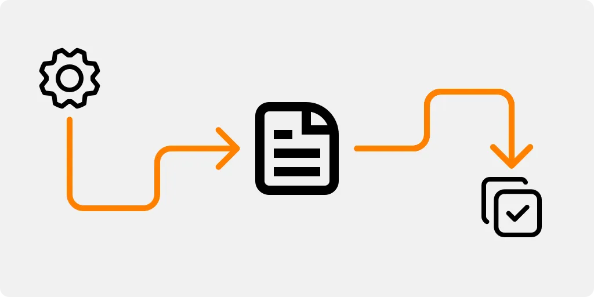
Accountability Workflow
A Clear Path
Clearly outlined the scope of the service blueprint, focusing on the end-to-end process of Thomson Reuters' Accountability Team within the web application.

The Journey
Mapping to Improvement
Established the objective of the blueprint, which was to map out the service interactions, touchpoints, and user journey to identify pain points and areas for improvement.
Stage 2
Outline Customer Actions and Frontstage Elements
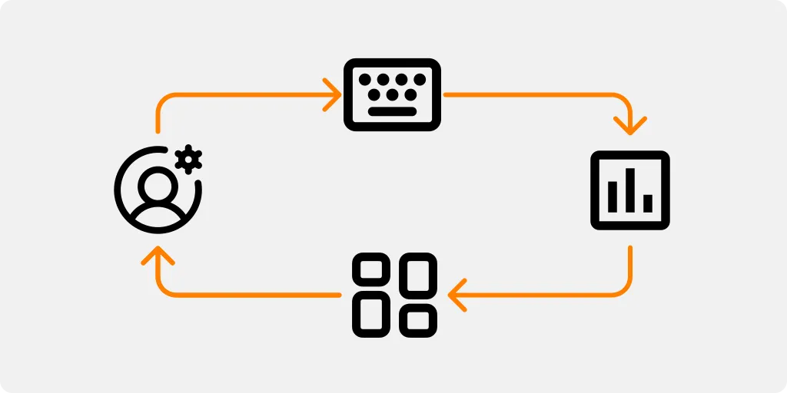
Actions in Focus
Accountability Tasks
Listed the specific customer actions and tasks that the Accountability Team performed within the web application, such as data entry, report generation, and analytics review.

Interface Essentials
Interface Essentials: Frontstage Components
Outlined the frontstage elements or user interface components that facilitated these actions, such as buttons, forms, data fields, and visualizations.
Stage 3
Map Internal Processes and Backstage Elements
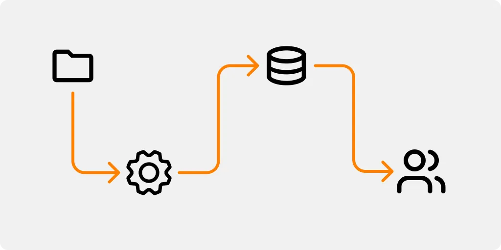
Behind the Scenes
Internal Operations
Identified the internal processes and operations that took place within the Accountability Team to support the customer actions.

Backstage Blueprint
System Foundations
Mapped out the backstage elements, such as data processing, data storage, data validation, and any backend systems or databases involved.
Stage 4
Define Customer Interactions with Service Touchpoints
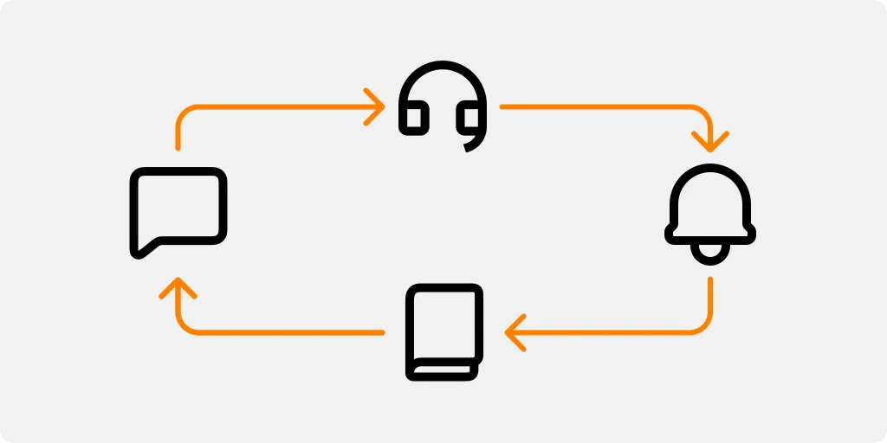
Touchpoints of Interaction
Customer Connections
Identified the various touchpoints or points of interaction that the customer encountered while using the web application, such as customer support, notifications, or help documentation.
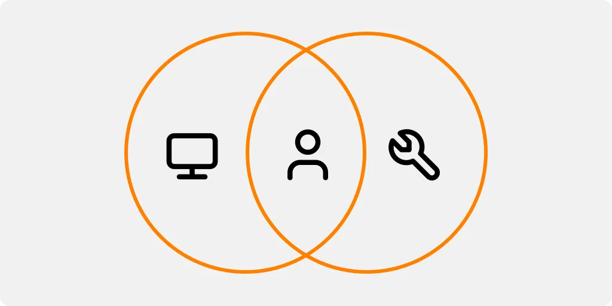
Interaction Types
Shaping Experience
Determined the nature of these interactions (e.g., digital, in-person, self-service) and their impact on the overall customer experience.
Stage 5
Highlight Potential Pain Points and Bottlenecks
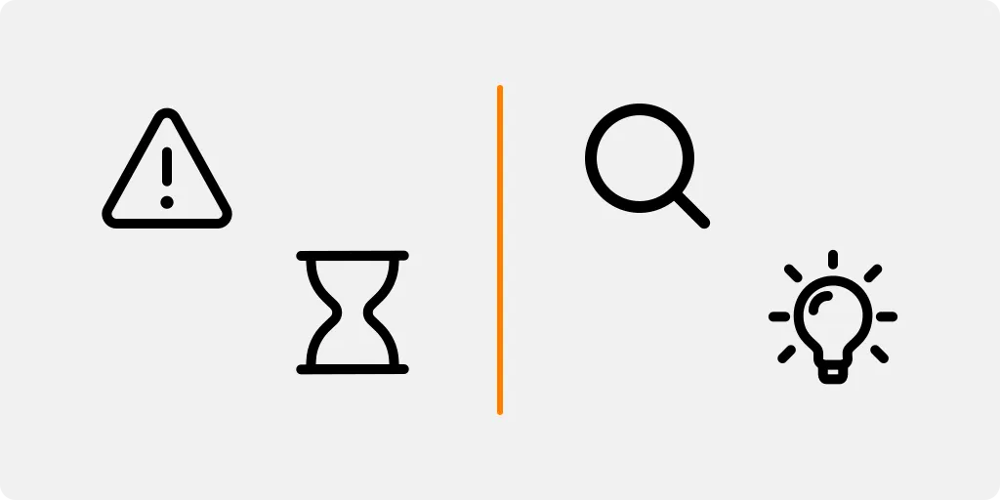
Spotlight on Challenges
Improving the Blueprint
Analyzed the service blueprint to identify potential pain points, bottlenecks, and areas of improvement for the Accountability Team's web application.
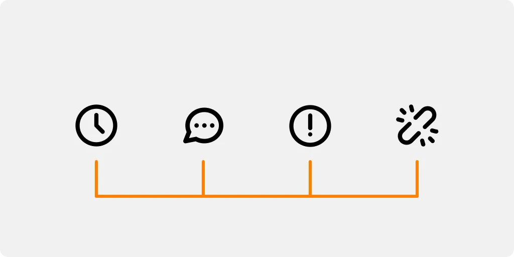
Breaking Barriers
Enhanced Customer Experience
Considered factors like inefficiencies, delays, unclear communication, or usability issues that might affect the customer experience.
Stage 6
Develop Solutions and Improvements
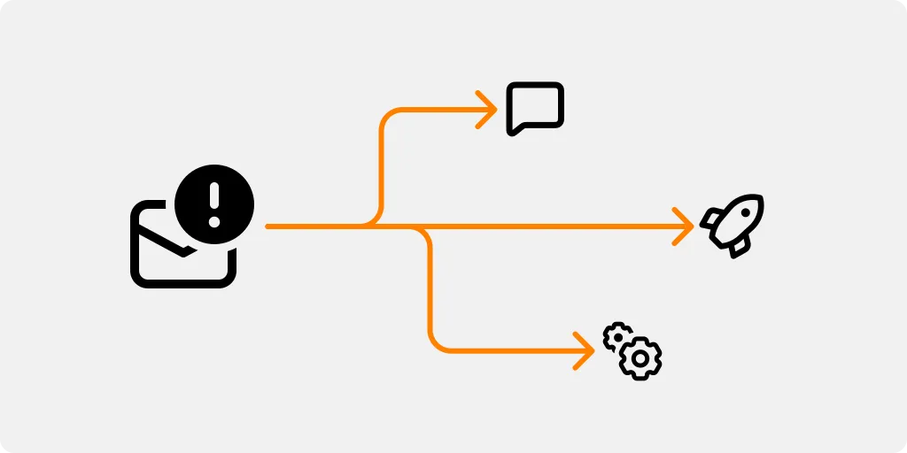
Solutions in Action
Resolving Bottlenecks
Brainstormed potential solutions and improvements to address the identified pain points and bottlenecks.
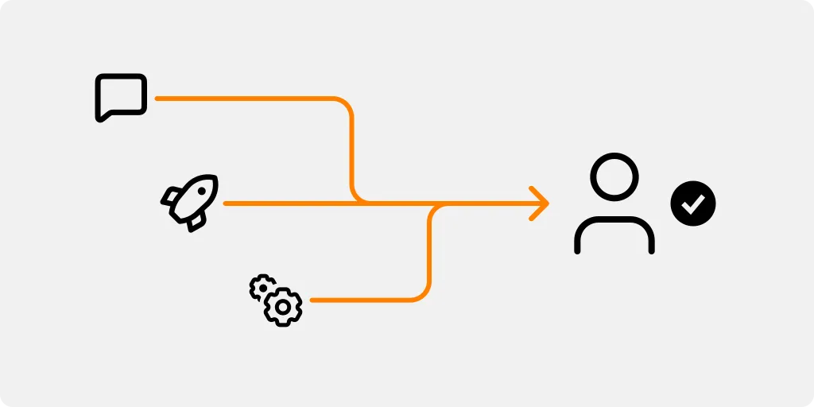
Enhancing Experiences
Technology and Beyond
Considered how technology, process optimization, or better customer support could enhance the overall service experience.
Stage 7
Create an Action Plan for Implementation
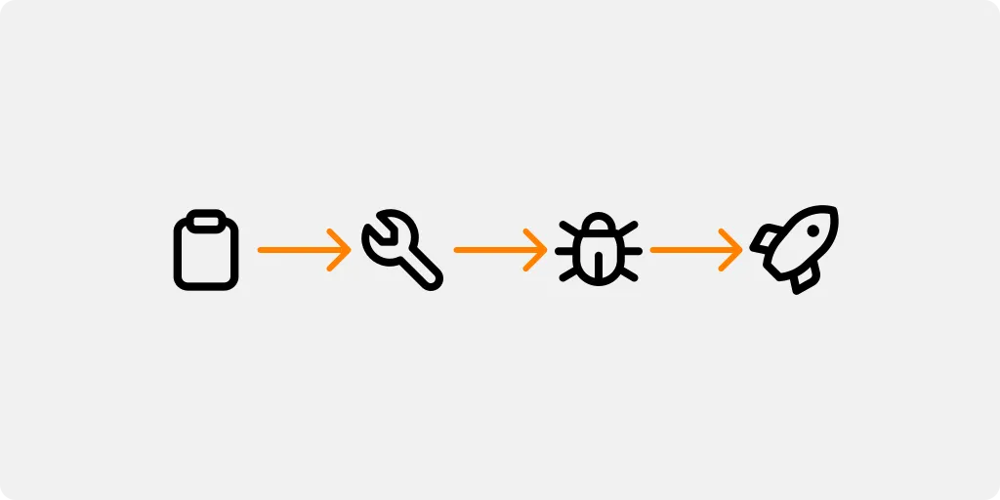
Action Plan
Turning Ideas into Reality
Created an action plan detailing how the identified solutions and improvements would be implemented in the web application.
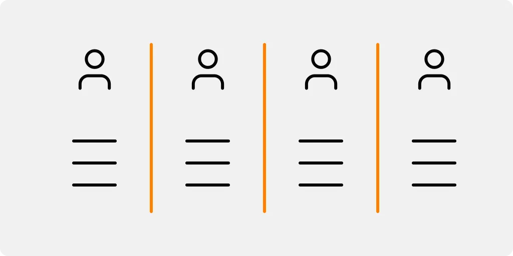
Responsibility Matrix
Executing Improvements
Assigned responsibilities to the relevant teams or stakeholders and set timelines for the execution of each improvement.
Stage 8
Test and Validate the Blueprint
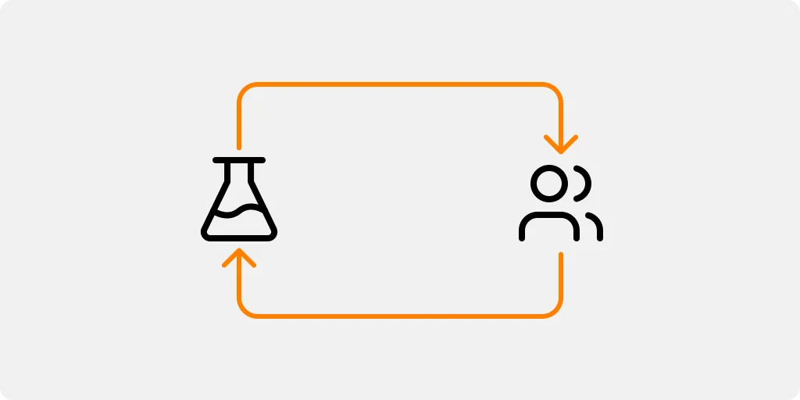
Validating the Blueprint
Insights in Action
Conducted testing and validation of the service blueprint by involving representatives from the Accountability Team and sample customers.
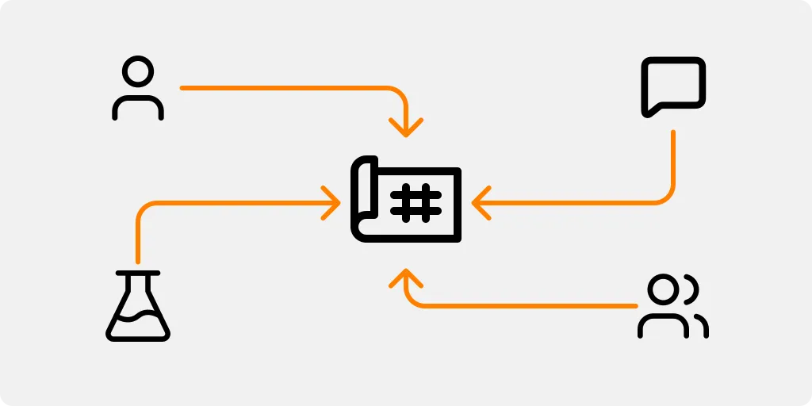
Feedback-Driven Refinement
Perfecting the Blueprint
Gathered feedback and insights to ensure the blueprint accurately represented the end-to-end process and potential enhancements.
Stage 9
Iterate and Evolve
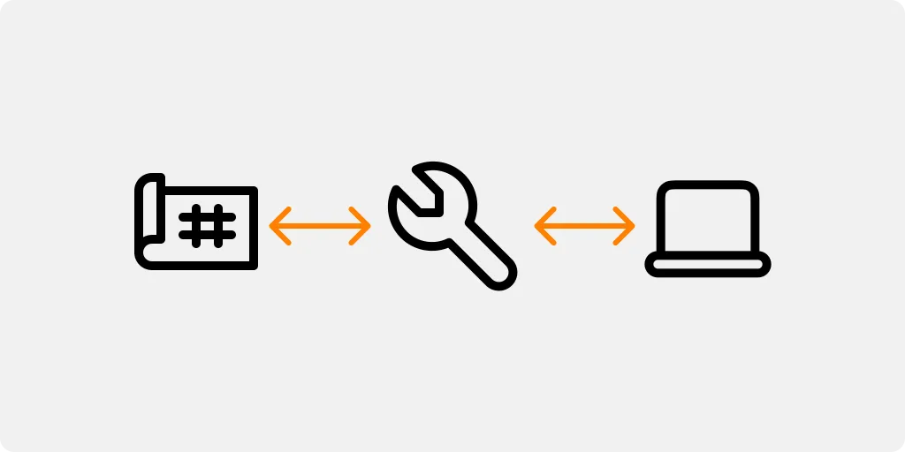
Evolving Blueprint
Adapting to Growth
Continued to iterate and evolve the service blueprint as the Accountability Team's web application evolved or new customer needs arose.
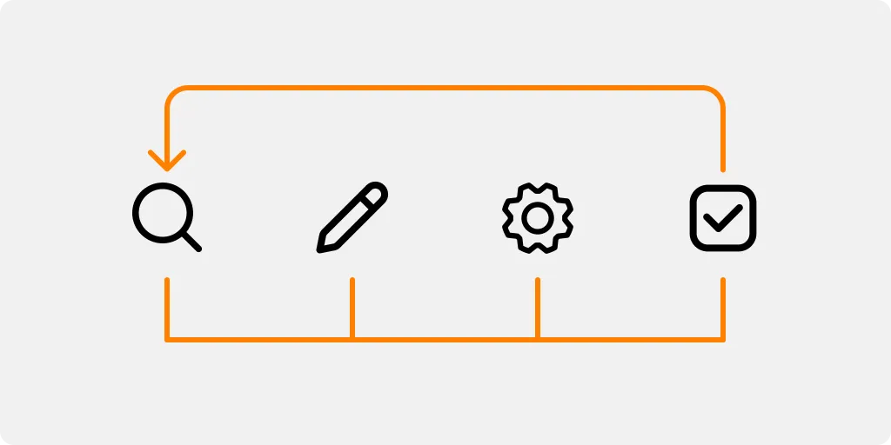
Blueprint Check-In
Ensuring Relevance
Regularly revisited the blueprint to ensure it remained a reliable and relevant reference for service optimization and customer-centric improvements.
Final Considerations
Enhanced Visibility and Efficiency
The service blueprint for Thomson Reuters' Accountability Team within the web application has provided valuable insights into the end-to-end process, streamlining customer actions and internal operations. By visualizing the service interactions and touchpoints, we have identified opportunities to improve visibility and efficiency, allowing team members to carry out their tasks more effectively and promptly
Optimized User Experience
Through the blueprint, we have successfully pinpointed pain points and bottlenecks in the customer journey. By addressing these challenges, we can enhance the overall user experience, ensuring a seamless and hassle-free interaction with the web application. The implementation of smart recommendations and personalized organization options empowers users to navigate the application with ease, leading to increased customer satisfaction.
Continual Improvement and Iteration
The service blueprint serves as a dynamic reference, encouraging continual improvement and iterative enhancements to the web application. As user needs evolve, and technology advances, the blueprint will remain a valuable guide in refining processes and implementing new features, ensuring Thomson Reuters' Accountability Team consistently delivers exceptional service.
Alignment with User-Centric Design
The service blueprint's creation adhered to a user-centric design approach, keeping the needs and preferences of the Accountability Team and its customers at the forefront. By involving representatives from both teams in the testing and validation process, we have ensured that the blueprint accurately reflects the real-world scenario and acts as a reliable reference for optimizing services.
Strategic Decision-Making
The insights garnered from the service blueprint offer Thomson Reuters a strategic advantage in making informed decisions to enhance operational efficiency and customer satisfaction. The blueprint acts as a blueprint for the future, guiding the implementation of improvements that align with the company's long-term objectives and goals.